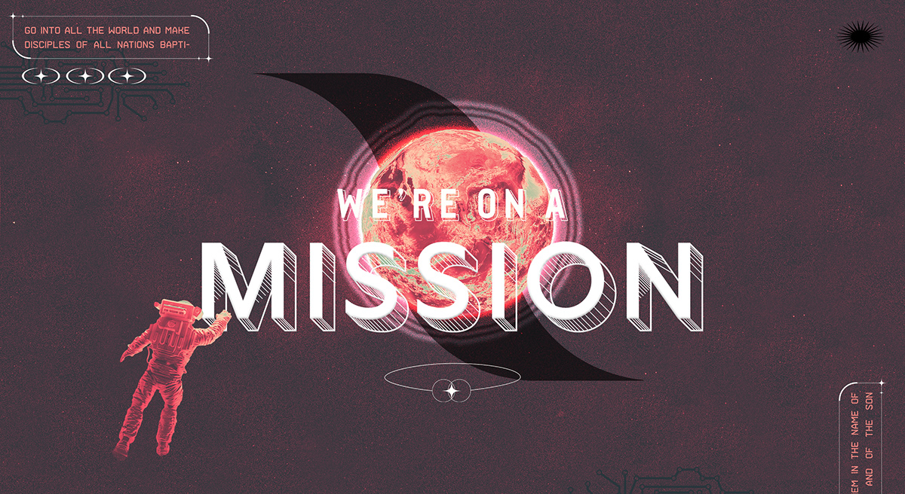
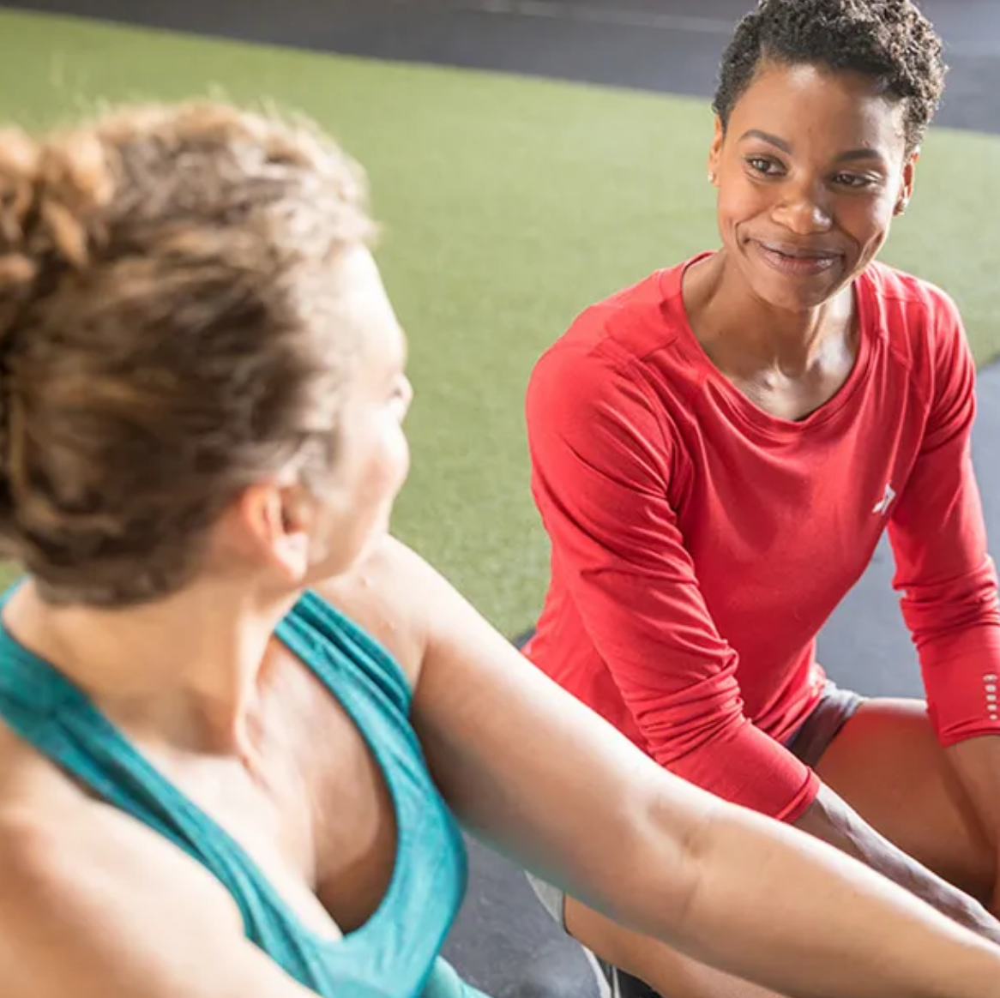
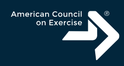

ACE stands out from other certifiers because we run
programs and initiatives and apply our own efforts
to bring to life the mission of getting people moving.
The ACE Mover Method
The ACE Mover Method is a philosophy that facilitating healthy lifestyle
behaviors. This philosophy is centered around empowering clients to take a
personalized journey. During their journey the client achieves self-efficacy
because the exercise professional or health coach practices empathy and
trust, communication and collaboration. It represents and underscores
ACE's respected role as a leader in making evidence-based
behavior-change facilitation the center point of programs, interventions, and other
work to get people moving.

Science & Research
Learn how exercise and behavior change science shapes ACE's certification programs
and continuing education offerings. Discover our contributions to scientific inquiry
in the form of primary research on the effect of behavior-change coaching on population health status
and evaluations of fitness products and practices and see who's on ACE's expert Scientific Advisory Panel.
Standards & Professionalism
See what ACE is doing to ensure that properly credentialed exercise professionals and health coaches are trusted and inspire confidence. Learn about ACE's advocacy in the places where standards for the profession are set and advanced and see ACE's call to action for consistent professionalism.
Community Engagement
Discover how ACE gets people moving in communities that need it the
most. From scholarships to partnerships, ACE is dedicated to bringing
physical activity opportunities to individuals and communities across the country.
Population Health
Read about ACE's contributions to the national conversation about population-health improvement. Discover how ACE is setting the stage for properly credentialed exercise professionals and health coaches to deliver community-based behavior-change programs-the kind experts agree must become an integral extension of healthcare and a key target for community-health investments.
Issue Advocacy
ACE works across the country to advance and revise policies that reduce barriers to being active and that open business doors for exercise professionals and health coaches. Through education and technical assistance ACE is dedicated to helping individuals become advocates for getting people moving.
ACE Mission Blog
The ACE Mission Blog tells the story of ACE's community engagement, issue advocacy, and science-and-research work.
